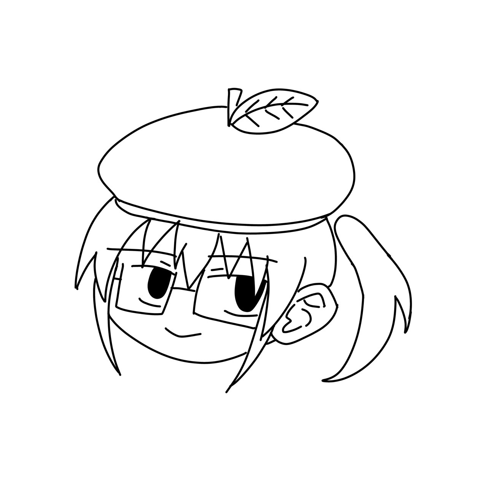

超滅の自己紹介
科学のSF創作イノベーション・システムズの作者です
超滅は大学生で生物を専攻しています
好きなゲームは東方プロジェクトとUndertale、好きなキャラは重音テト、魂魄妖夢、古明地こいしです
英語とプログラミング勉強中
Tyoumetsu is the author of Science Fiction Creative Innovation Systems
Tyoumetsu is a univasity student majoring in biology
Studying English and Programming
My favorite games are Touhou Project and Undertale, and my favorite characters are Teto Kasane, Youmu Konpaku, and Koishi Komeiji
キャラクター紹介準備中
業績・資格など
漫画準備中
LINEスタンプ
グッズ準備中
ゲーム(原作)準備中
コラボ準備中